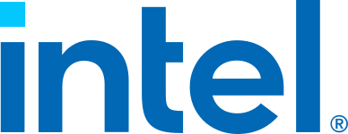

01 · What the public record already shows
Four things the public record shows right now.
~5,100
bopd deferred in June 2026. Harmony and Heritage wells produced on 82% and 62% of days. At full uptime they'd have made ~34,800 bopd, not 29,700.
BSEE OGOR-A days on production, June 2026
~3,700
bopd: what the 14 idle completions on Harmony and Heritage made before the 2015 shut-in. The idle-well board ranks them as workover candidates.
BSEE, Jan to Apr 2015 average
~3,200
bopd: what 21 Hondo completions made before shut-in. The restart board ranks them, next to Sable's 9-well perf-add plan at ~600 bopd each.
BSEE; Sable 8-K, Sept 28, 2026
64%
unit water cut in June 2026. Water, not oil, is what Las Flores Canyon has to process, and LFC handles ~80% of Harmony and Heritage capacity today.
BSEE; Sable 8-K, Sept 28, 2026
Public data only, and it runs about four months behind: June 2026 is the latest month, published Oct 15. The room labels Sable's own disclosed figures separately from the federal record so the two never mix.
02 · What comes next
With one data contact inside Sable, this becomes the live room.
- Perf-add tracker: the Hondo plan and the next Harmony and Heritage adds, well by well, with planned against actual uplift.
- Live rates: SCADA and well-test data replace the four-month federal lag.
- LFC throughput: emulsion and water handling against the upgrade plan, so the facility stops being the quiet constraint as Hondo comes back.
- Sales-route board: nominations against sold volumes at each handoff to Pentland and the refiners, so every constraint has a barrel count on it.
- Ops picture: Santa Barbara Channel buoy data, USGS earthquakes and vessel traffic at the platforms, on the same map.
03 · Why me
An engineer who turns scattered data into the tool a team runs on.
- Ten years of production data: yield, product and quality engineering at Intel, AMD and Micron, for customers like AWS and Azure. Same job as a well book: find the units that underperform, and why.
- I build it myself: this room, and the AI agents and tracking systems I run in production at XL Eagle. Not a vendor, not a demo.
- Federal process: 900+ competitive federal pursuits, 50+ federal contracts won, $1.48M in revenue won and verified on USAspending. I know how agencies decide and approve.
- Straight about the gap: I am not a petroleum engineer. I build the data layer your petroleum engineers work from.
- Close by: Austin, a few hours from Houston.
Where I've worked


Customers I've served


04 · The ask
Tell me what would help most.
Extending the room with internal data, building trackers for operations or development, or taking on whatever work is most useful to Sable. 15 minutes is enough to find out.
Email meOpen the room